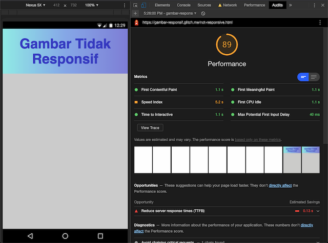
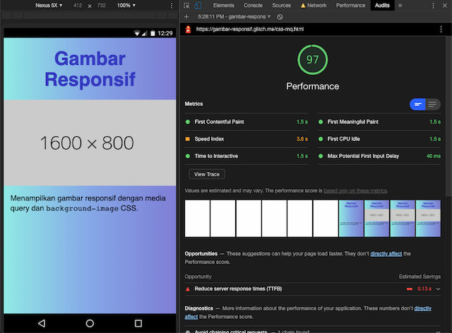
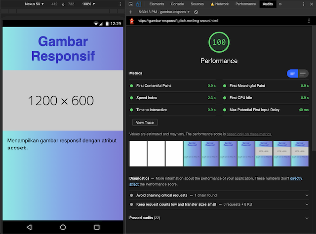

Artikel ini membahas teknik-teknik memuat dan menampilkan gambar responsif yang sesuai dengan ukuran viewport.
Daftar Isi
- Non-responsif
- Teknik 0: CSS
widthdanheight - Teknik 1: CSS media query dan
background-image - Teknik 2:
imgdengan atributsrcset - Perbandingan performa
- Penutup
- Referensi
Perangkat (device) yang digunakan untuk mengakses web makin bervariasi—makin besar, makin kecil, makin tajam. Walaupun tag img sudah ada sejak tahun 1993, baru beberapa tahun terakhir memilih ukuran file gambar yang tepat jadi dilema.
Jika gambar terlalu kecil, terlihat pecah (pixelated) di layar yang lebih besar. Seringkali gambar berukuran besar jadi pilihan. Akibatnya user harus men-download file yang lebih besar dari yang dibutuhkan. Padahal hal ini dapat mengganggu performa dan pengalaman pengguna (UX), karena:
- Proses loading jadi lebih lambat.
- Browser harus bekerja lebih keras untuk mengecilkan file gambar, misalnya dari 2000px menjadi 375px.
- Menguras kuota user yang menggunakan paket data.
Muncullah kebutuhan atas gambar responsif, yaitu kemampuan untuk memuat file gambar yang ukurannya sesuai dengan layar perangkat user.
Ada beberapa teknik gambar responsif yang banyak digunakan. Yang lebih dulu populer adalah media query dan background-image CSS. Lalu hadirlah atribut srcset untuk tag img yang memang berfungsi untuk menampilkan gambar secara responsif.
Artikel ini akan membahas bagaimana penggunaan dan apa saja perbedaan kedua teknik tersebut. Kita akan membuat halaman dengan spesifikasi sebagai berikut:
- Berisi satu gambar yang memenuhi lebar layar (100%)
- Rasio/proporsi gambar 2:1
- Ada 6 ukuran file gambar: 400 x 200px, 800 x 400px, 1200 x 600px, 1600 x 800px, 2000 x 1000px, dan 2400 x 1200px
Di dunia nyata, breakpoint dan ukuran yang digunakan tentu berbeda. Fokus di contoh ini adalah untuk mendemonstrasikan cara kerja masing-masing teknik. Ada dua tujuan gambar responsif yang harus dicapai:
- File gambar yang dimuat adalah yang paling mendekati ukuran dan kepadatan pixel layar
- File gambar berukuran sama atau lebih besar dari ukuran layar (agar tidak pecah)
💻 Kamu bisa melihat dan mencoba kode demo di halaman Glitch ini.
Non-responsif
<img src="1600x800.png" alt="" />
Gambar ini sama sekali belum menggunakan teknik responsif. Lihat demo.
Layar ponsel berisi gambar yang lebih lebar dari viewport
Selain belum mencapai kedua tujuan di atas, jika diakses dari layar berukuran kecil, gambar yang terlalu besar merusak (stretch) layout halaman dan sulit dilihat isinya.
Teknik 0: CSS width dan height
<img src="1600x800.png" alt="" />
<style>
img {
width: 100%;
height: auto; /* tentukan tinggi gambar secara otomatis sesuai isi file */
}
</style>
Teknik ini menampilkan gambar responsif dari segi visual (menyesuaikan lebar layar), tapi belum memuat gambar secara responsif. Berapapun lebar viewport, file yang di-download berukuran 1600 x 800px. Lihat demo.
Layar ponsel berisi gambar 1600 x 800px yang diperkecil selebar viewport
UI library (Bootstrap, Bulma, dsb) atau style reset biasanya sudah memiliki global rule img { max-width: 100% } untuk menjawab masalah ini.
Agar lebih optimal, definisikan height secara eksplisit jika memungkinkan. Misalnya, jika rasio 2:1 dan lebar gambar = 100% lebar layar, maka tinggi gambar adalah separuh (50%) lebar layar. Lihat demo.
<img src="1600x800.png" alt="" width="400" height="200" />
<style>
img {
width: 100%;
height: 50vw; /* 50% lebar layar */
}
</style>
Selama file gambar dalam proses loading, browser belum mendapat isi gambar dan value height: auto masih 0. Saat file gambar selesai di-download, barulah value height diperbarui. Teks di bawah gambar pun terdorong turun.
Pergeseran layout saat gambar selesai loading
Pergeseran layout (layout shift) seperti ini perlu diminimalisir karena mengganggu pengalaman pengguna. Kita bisa memantaunya menggunakan metric Cumulative Layout Shift yang merupakan bagian dari Core Web Vitals.
Dengan menentukan height secara eksplisit, kita bisa meminimalisir layout shift. Sebaiknya kita juga mengisi atribut width dan height tag img sebagai fallback jika style CSS tertunda atau gagal dimuat.
Tidak terjadi pergeseran layout karena tinggi gambar di-set secara eksplisit
Meski belum memenuhi kebutuhan gambar responsif, width dan height CSS perlu digunakan untuk tampilan layout yang lebih stabil. Kita dapat menganggapnya sebagai “Teknik 0” gambar responsif.
Nah, sekarang kita akan lanjut ke teknik gambar responsif pertama.
Teknik 1: CSS media query dan background-image
Media query CSS adalah fitur yang krusial untuk desain web responsif. Kita bisa menentukan kondisi berdasarkan spesifikasi atau fitur perangkat yang digunakan (jenis media, lebar layar, kepadatan pixel, dll). Style dalam media query hanya dijalankan jika syarat terpenuhi.
Kita bisa menggunakan properti background-image dalam media query untuk memuat gambar berdasarkan kondisi lebar viewport. Lihat demo versi dasar.
<div class="responsive-img" aria-hidden="true"></div>
<style>
.responsive-img {
/* Wajib tentukan dimensi elemen container */
width: 100%;
height: 50vw;
/* Pastikan gambar mengisi elemen container dengan benar */
background-size: cover;
background-repeat: no-repeat;
/* Fallback/initial image */
background-image: url("small.png");
}
/* Contoh dasar background-image dalam media query */
@media screen and (min-width: 992px) {
.responsive-img {
background-image: url("large.png");
}
}
</style>
- Gunakan elemen
div, bukanimg. Atributaria-hiddenberfungsi untuk aksesibilitas agar teknologi pembaca layar (screen reader) melewatidivkosong ini. Jika terpaksa menggunakan background image untuk konten yang memiliki makna, gunakan role/atribut ARIA yang sesuai, misalnya<div class="responsive-img" role="img" aria-label="Deskripsi gambar">. - Tambahkan style CSS untuk mengatur ukuran dan tampilan background.
- Tentukan file gambar default/fallback berukuran kecil,
small.png. - Jika lebar viewport 992px atau lebih, gunakan file yang lebih besar,
large.png.
File mana yang di-download?
Kalau kita lihat lagi contoh di atas, jika viewport >= 992px, kedua baris style background-image akan terbaca. Yang pertama (small) sebagai style default, kedua (large) karena memenuhi kondisi media query. Sesuai cara kerja CSS, yang diterapkan adalah style terakhir (large).
Lalu, apakah browser men-download kedua file? Jawabannya: Masing-masing browser punya perilaku berbeda. Sebagian besar browser modern cukup “pintar” untuk hanya men-download file yang akan ditampilkan.
Menggunakan DevTools untuk memeriksa file yang di-download. Ternyata hanya file terakhir (large) yang di-download; file fallback/default dilewati. 👍🏽
Studi kasus yang rinci bisa dilihat di artikel oleh Tim Kadlec ini, khususnya test 4 dan test 7. Saat ini dukungan browser sudah lebih baik sejak artikel tersebut ditulis tahun 2012. Agar lebih foolproof, kita bisa gunakan kombinasi max-width dan min-width, dan hilangkan style background-image default di luar media query.
Media query untuk layar dengan kepadatan pixel tinggi (“retina”)
Makin banyak device yang memiliki layar dengan kepadatan pixel (pixel density) tinggi. Apple pertama kali mempopulerkan fitur ini (iPhone 4, 2010) dengan istilah “Retina display”. Istilah “retina” pun kerap digunakan untuk menyebut device apapun yang kepadatan pixelnya tinggi.
Device pixel ratio adalah perbandingan antara 1 pixel fisik (device / physical pixel) dan 1 pixel CSS. Contohnya, iPhone 3G dan 4 memiliki ukuran fisik layar yang sama, tapi kepadatan pixel iPhone 4 dua kali lipat iPhone 3G.
| iPhone 3G | iPhone 4 (Retina) | |
|---|---|---|
| Spesifikasi | Wikipedia | Wikipedia |
| Kepadatan | 163 ppi | 326 ppi |
| Resolusi pixel | 320x480 pixel | 640x960 pixel |
| Device pixel ratio | 1 (1 pixel device = 1 pixel CSS) |
2 (2 pixel device = 1 pixel CSS) |
Device pixel ratio tidak hanya 1 dan 2, namun ada juga 1.5, 3, dan mungkin akan bertambah di masa mendatang.
Ukuran gambar perlu disesuaikan dengan device pixel ratio agar terlihat tajam. Misalnya, walaupun layar iPhone 4 memiliki lebar 320px dalam pixel CSS, ukuran gambar yang ideal adalah 640px sesuai lebar pixel device/fisik. Untuk menentukan query berdasarkan device pixel ratio, gunakan ekspresi resolution (min-resolution, max-resolution) dengan unit dppx.
Catatan:
-webkit-device-pixel-ratioadalah query non-standar yang kegunaannya mirip denganresolution. Misalnya,min-resolution: 2dppxsama dengan-webkit-min-device-pixel-ratio: 2. Saat ini, browser major yang hanya mendukung-webkit-device-pixel-ratioadalah Safari macOS maupun iOS.- Jika perlu presisi lebih, kita bisa menggunakan unit
dpi, misalnyamin-resolution: 326dpi.
Gabungan media query width dan resolution
<div class="responsive-img" aria-hidden="true"></div>
<style>
.responsive-img {
width: 100%;
height: 50vw;
background-size: cover;
background-repeat: no-repeat;
background-image: url("https://dummyimage.com/400x200");
}
/* device pixel ratio < 2 */
@media screen and (min-width: 401px) and (max-width: 800px) {
.responsive-img {
background-image: url("https://dummyimage.com/800x400");
}
}
@media screen and (min-width: 801px) and (max-width: 1200px) {
.responsive-img {
background-image: url("https://dummyimage.com/1200x600");
}
}
@media screen and (min-width: 1201px) and (max-width: 1600px) {
.responsive-img {
background-image: url("https://dummyimage.com/1600x800");
}
}
@media screen and (min-width: 1601px) and (max-width: 2000px) {
.responsive-img {
background-image: url("https://dummyimage.com/2000x1000");
}
}
@media screen and (min-width: 2001px) {
.responsive-img {
background-image: url("https://dummyimage.com/2400x1200");
}
}
/* device pixel ratio >= 2 */
@media screen and (min-resolution: 2dppx),
screen and (-webkit-min-device-pixel-ratio: 2) {
.responsive-img {
background-image: url("https://dummyimage.com/800x400");
}
}
@media screen and (min-width: 401px) and (max-width: 800px) and (min-resolution: 2dppx),
screen and (min-width: 401px) and (max-width: 800px) and (-webkit-min-device-pixel-ratio: 2) {
.responsive-img {
background-image: url("https://dummyimage.com/1600x800");
}
}
@media screen and (min-width: 801px) and (min-resolution: 2dppx),
screen and (min-width: 801px) and (-webkit-min-device-pixel-ratio: 2) {
.responsive-img {
background-image: url("https://dummyimage.com/2400x1200");
}
}
</style>
- Kode di atas menggunakan kombinasi
min-widthdanmax-widthuntuk memperjelas range lebar viewport dan gambar yang digunakan. (Contoh: Jika lebar viewport antara 401px - 800px, gunakan gambar yang lebarnya 800px.) - Query
min-resolutiondi contoh ini hanya mendeteksi device pixel ratio kurang dari2, ATAU2dan lebih. Rasio1.5mendapat file gambar yang sama dengan rasio1. Sebaliknya, rasio2.5ke atas tetap mendapat gambar dua kali ukuran viewport.
Uji coba CSS background-image dengan media query
Hasil uji coba untuk halaman demo.
| Jenis device | Browser | Lebar pixel CSS | Lebar pixel device | DPR | Lebar file gambar |
|---|---|---|---|---|---|
| Macbook Air | Chrome 81; Firefox 76; Safari macOS 12 / iOS 11 *️⃣ | 360 | 360 | 1 | ✅ 400 |
| Macbook Air | Chrome 81; Firefox 76; Safari macOS 12 | 1440 | 1440 | 1 | ✅ 1600 |
| iPhone 8 *️⃣ | Safari iOS 11 | 375 | 750 | 2 | ✅ 800 |
| iPhone 8 *️⃣*️⃣ | Chrome 81 | 375 | 750 | 2 | ✅ 800 |
| Xiaomi Redmi 4A | Chrome Canary 82; Chrome 77 (Android 6) | 360 | 720 | 2 | ✅ 800 |
| Xiaomi Redmi 4A | Chrome Canary 82; Chrome 77 (Android 6) | 640 | 1280 | 2 | ✅ 1600 |
| iPad mini 2 | Safari iOS | 768 | 1536 | 2 | ✅ 1600 |
| iPad mini 2 | Safari iOS | 1024 | 2048 | 2 | ✅ 2400 |
| Samsung Galaxy Note *️⃣*️⃣ | Chrome 81 | 360 | 1080 | 3 | 🌀 800 |
- *️⃣ Simulasi user agent iOS 11 di Safari Responsive Design Mode
- *️⃣*️⃣ Simulasi dengan Chrome DevTools
- 🌀 Gambar yang dimuat tidak sesuai DPR karena media query-nya tidak ditulis pada contoh ini. Cukup tambahkan media query yang sesuai jika perlu.
Teknik 2: img dengan atribut srcset
<img
alt=""
width="400"
height="200"
src="https://dummyimage.com/400x200"
srcset="
https://dummyimage.com/400x200 400w,
https://dummyimage.com/800x400 800w,
https://dummyimage.com/1200x600 1200w,
https://dummyimage.com/1600x800 1600w,
https://dummyimage.com/2000x1000 2000w,
https://dummyimage.com/2400x1200 2400w
"
/>
Kita menggunakan tag img seperti biasa dengan tambahan atribut srcset. Atribut ini berisi string sumber file dan lebar file yang dipisahkan tanda koma. Sumber file adalah path ke file gambar (sama seperti isi atribut src), dan lebar file adalah integer dengan satuan w.
Dalam bahasa manusia, “Hai browser, saya punya file-file gambar ini. Tolong pilih yang paling sesuai, ya.”
https://dummyimage.com/400x200 400w- File
https://dummyimage.com/400x200lebarnya 400px
- File
https://dummyimage.com/800x400 800w- File
https://dummyimage.com/800x400lebarnya 800px (dan seterusnya)
- File
Kenapa perlu mencantumkan lebar? Agar browser bisa tahu lebar file tanpa harus men-download semua file. Browser akan memilih ukuran file yang paling mendekati lebar dan resolusi layar berdasarkan data yang kita sediakan. Contoh:
- Jika halaman di bawah diakses dari laptop ber-DPR 1 dengan jendela browser di-resize seukuran 375px, gambar yang dimuat adalah gambar
400x200 - Jika diakses dari iPhone 6 (DPR 2), yang dimuat
800x400 - Jika diakses dari Galaxy Note 3 (DPR 3), yang dimuat
1200x600 - Jika diakses dari browser yang belum mendukung
srcset, isi atributsrcdigunakan seperti biasa
Membandingkan gambar responsif menggunakan Chrome DevTools
Uji coba img srcset
Hasil uji coba untuk halaman demo.
| Jenis device | Browser | Lebar pixel CSS | Lebar pixel device | DPR | Lebar file gambar |
|---|---|---|---|---|---|
| Macbook Air | Chrome 81; Firefox 76; Safari macOS 12 / iOS 11 *️⃣ | 360 | 360 | 1 | ✅ 400 |
| Macbook Air | Chrome 81; Firefox 76; Safari macOS 12 | 1440 | 1440 | 1 | ✅ 1600 |
| iPhone 8 *️⃣ | Safari iOS 11 | 375 | 750 | 2 | ✅ 800 |
| iPhone 8 *️⃣*️⃣ | Chrome 81 | 375 | 750 | 2 | ✅ 800 |
| Xiaomi Redmi 4A | Chrome Canary 82; Chrome 77 (Android 6) | 360 | 720 | 2 | ✅ 800 |
| Xiaomi Redmi 4A | Chrome Canary 82; Chrome 77 (Android 6) | 640 | 1280 | 2 | ❓ 1200 |
| iPad mini 2 | Safari iOS | 768 | 1536 | 2 | ✅ 1600 |
| iPad mini 2 | Safari iOS | 1024 | 2048 | 2 | ✅ 2400 |
| Samsung Galaxy Note *️⃣*️⃣ | Chrome 81 | 360 | 1080 | 3 | ✅ 1200 |
- *️⃣ Simulasi user agent iOS 11 di Safari Responsive Design Mode
- *️⃣*️⃣ Simulasi dengan Chrome DevTools
- ❓ Di layar berukuran lebar 1280px (pixel device) / 640px (pixel CSS), ekspektasi gambar yang dimuat adalah 1600px. Tapi di browser Chrome (Chrome 81 macOS, Chrome Canary 82 Android, Chrome 77 Android), yang dimuat adalah 1200px.
- Perilaku ini tidak terjadi di Safari (macOS dan simulasi user agent iOS 11).
- Perilaku ini tidak terjadi di Chrome jika DPR 1 (jika pixel device sama dengan pixel CSS).
Perbandingan performa
Kita akan mengukur performa tiga versi halaman dengan pengaturan berikut:
- Chrome 81 MacOS incognito mode
- DevTools setting: Disable cache, throttle koneksi Fast 3G
- Setting Lighthouse Audit: kategori Performance, device Mobile
- Setting Performance: DPR 2, lebar viewport 375px (CSS pixel) / 750px (device pixel)
- Pengukuran tab Performance dijalankan dua kali, hasilnya dipisahkan tanda koma
| Tidak responsif | CSS media query | img srcset | |
|---|---|---|---|
| Demo | Demo | Demo | |
| 🗂 Lighthouse | |||
| Performance Score | 89 | 97 | 100 |
| Speed Index | 5.2 s | 3.6 s | 2.3 s |
| FCP, TTI, FMP, FCI | 1.1 s | 1.5 s | 0.9 s |
| 🗂 Network | |||
| Image file size | 9.4 kb (2400x1200) | 2.9 kb (800x400) | 2.9 kb (800x400) |
| Image load time | 5.08 s, 2.27 s | 578 ms, 814 ms | 1.66 s, 1.59 s |
| Transferred | 11.3 kB | 6.8 kB | 5.2 kB |
| Resources | 10.5 kB | 6.1 kB | 4.5 kB |
| Finish | 5.68 s, 4.93 s | 2.95 s, 2.85 s | 2.26 s, 2.20 s |
| Load | 5.68 s, 4.93 s | 2.96 s, 2.86 s | 2.27 s, 2.20 s |



Dari hasil di atas, dapat kita lihat bahwa kecepatan dan performa dapat berubah-ubah dan tidak hanya ditentukan oleh isi gambar saja. Tapi, mengoptimasi gambar—dalam hal ini dengan cara memuat gambar responsif—dapat membantu meningkatkan performa. Isi payload jadi lebih ringan, waktu loading jadi lebih cepat.
Penutup
Berikut ini ringkasan dari teknik-teknik yang sudah kita coba.
-
CSS width dan height belum bisa memuat file gambar secara responsif. Tapi perlu diterapkan untuk tampilan visual yang responsif dan stabil.
-
Baik media query CSS maupun
imgdengan atributsrcsetdapat digunakan untuk memuat gambar secara responsif. Dengan teknik-teknik ini, kita dapat menyajikan file gambar dengan lebih cepat, hemat, dan enak dilihat di layar pengguna, apapun perangkat yang digunakan. -
Kedua teknik dapat diterapkan secara aksesibel.
- Gunakan
img alt="Deskripsi gambar"agar pembaca layar membacakan deskripsi gambar; atauimg alt=""agar pembaca layar melewatinya. - Gunakan
div role="img" aria-label="Deskripsi gambar"agar pembaca layar menganggap elemendivsebagai gambar dan membacakan deskripsinya; ataudiv aria-hidden="true"agar pembaca layar melewatinya.
- Gunakan
-
Kedua teknik memiliki keunggulan dan kekurangan masing-masing.
- Media query CSS sangat fleksibel karena kita mendefinisikan seluruh kondisi media query (lebar viewport, device pixel ratio, dsb) secara manual. Namun, karena seluruh kondisi harus didefinisikan satu persatu, kode cenderung lebih panjang dan sangat sulit untuk meng-cover semua kombinasi lebar dan kepadatan pixel.
- Hanya media query CSS yang dapat men-download gambar khusus untuk breakpoint tertentu dengan query
max-widthdanmin-width. - Sebaliknya, dengan
srcset, pemilihan file gambar berdasarkan lebar viewport dan device pixel ratio dilakukan secara otomatis oleh browser 🤯. Kode lebih ringkas; menggunakan gambar responsif jadi lebih mudah. Konsekuensinya, kita bergantung pada browser untuk pemilihan gambar dengan kemungkinan quirks atau perilaku yang inkonsisten.
-
Kedua teknik ini juga memiliki peruntukan masing-masing.
background-imageCSS sebaiknya digunakan untuk gambar dekoratif yang bukan bagian dari page content (isi utama halaman).- Tag
imgdigunakan untuk gambar yang berperan sebagai page content, yang perlu ditampilkan walaupun CSS tidak termuat, dimatikan, atau dimodifikasi (contoh: “Reader Mode” Safari iOS, aplikasi reader seperti Pocket, atau saat dicetak).
Extra credits
Beberapa teknik dan strategi yang belum dibahas di artikel ini, yang dapat dieksplorasi lebih lanjut.
-
sizes— Dengansrcset, browser mengasumsikan suatu gambar selalu ditampilkan full screen/sesuai lebar layar (100%). Tambahkan atributsizesuntuk mengatur lebar gambar pada ukuran-ukuran viewport tertentu. Misalnya, suatu gambar ditampilkan full screen (100%) di layar kecil, 50% di layar besar. Dengansizes, browser bisa memilih gambar paling sesuai dengan memperhitungkan spesifikasi ukuran tersebut. -
Network Information API — Ada kalanya user yang menggunakan device dengan kepadatan pixel tinggi sedang berada di koneksi lambat dan tidak butuh melihat gambar yang tajam. Gunakan Network Information API dengan Javascript untuk memeriksa kecepatan koneksi user dan memuat gambar besar hanya jika kecepatan tinggi.
- Adaptive serving based on network quality — Milica Mihajlija, web.dev
- Network Information API — MDN Web Docs
Referensi
- Dukungan browser via caniuse.com
- Tag
img, atributsrcsetdansizes- Serve responsive images — Katie Hempenius, web.dev
- Responsive images — MDN Web Docs
- Media query dan
background-imageCSS- Optimize CSS background images with media queries — Demian Renzulli, web.dev
- Simple Responsive Images With CSS Background Images — Stephen Thomas, Smashing Magazine
- Lain-lain
- When to use IMG vs. CSS background-image? — diskusi StackOverflow
- Use density descriptors — Katie Hempenius, web.dev — Belajar lebih mendalam tentang pixel density dan deteksi device pixel ratio
- Studi perilaku browser men-download gambar
- Media Query & Asset Downloading Results — Tim Kadlec
- Image Inconsistencies: How and When Browsers Download Images — CSS Wizardry
- Tools
- mydevice.io — Cek detail device (dimensi, kepadatan dan rasio pixel, dll)
- sharp dan ImageMagick — tools untuk me-resize file gambar